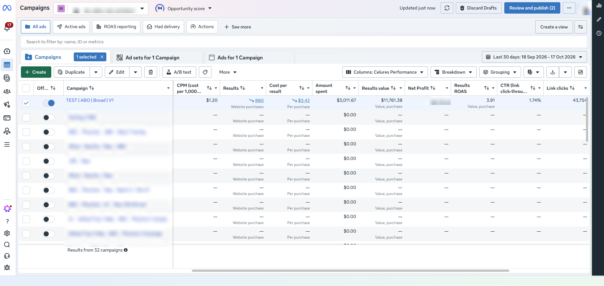

Ad account audit
Review your account setup and available performance data together to identify issues, questions, and priorities.
META ADS CONSULTING · 06
You run the campaigns. We help you make better decisions. Get your ad account audited, work through campaign structure, and bring your creative questions to two focused consultation sessions.
MADE FOR YOUR KIND OF BUSINESS
For brands aiming for 50–100 orders a day, with a planned Meta ads budget of US$100–300 a day.
↗TWO CONVERSATIONS. A CLEARER DIRECTION.
For brands with a team ready to implement, and a growth plan that needs a second pair of eyes.
Growth targets describe who this is for; they are not a guarantee of results.
META ADS CONSULTATION PACKAGE
৳5,000 BDT / complete package
Two focused hours to audit, ask, and plan.
Consulting only. Ad spend is separate. You or your team manage and implement the campaigns.
CASE STUDY · CAMPAIGN SNAPSHOT
A look inside Meta Ads Manager: the selected “TEST | ABO | Broad | V1” campaign, for 18 September–17 October 2026.

How spend relates to purchases, what the campaign structure can tell us, and what additional creative and business context we need before deciding the next step.
Figures are reported for the selected campaign, not an account-wide total. Past performance does not guarantee future results. Purchase value is not profit.
WHAT WE CAN HELP WITH
Work directly on the decisions holding your brand back. This is advisory support for you or your in-house team, with practical discussion around your account, campaign structure, and creative approach.
Review your account setup and available performance data together to identify issues, questions, and priorities.
Discuss how your campaigns and ad sets are organized, your testing approach, and the decisions behind your current setup.
Bring your ad concepts, messaging, hooks, and existing creatives for feedback and a discussion of what to test next.
Talk through budget allocation and the signals you should consider before increasing spend, in the context of your business goals.
A CLEAR STARTING POINT
We’ll agree on the exact scope together. Here’s what we can plan around your business.
Talk through your requirementsHOW WE WORK
Clear priorities. Shared decisions.
A process you’re part of.
Tell us about your brand, current ad activity, goals, and questions on WhatsApp. We’ll agree the session times and what to bring.
Review the account and the questions that matter most. Discuss campaign structure, creative, and your immediate priorities.
Work through remaining questions, review your thinking, and clarify the next steps for you or your team to implement.
A FEW THINGS TO KNOW
Want to talk about your specific setup?
Let’s work through it together.
Two one-hour consultation sessions, for two hours in total. You can use the sessions for an ad account audit, campaign structure questions, creative feedback, and scaling discussions.
No. This is a consulting service. You or your team remain responsible for creating, publishing, monitoring, and managing campaigns.
Brands aiming to scale toward 50–100 orders per day and with a planned daily Meta advertising budget of US$100–300. These are suitability criteria and goals, not promised outcomes.
No. The ৳5,000 covers the two consultation sessions only. Your advertising spend is separate and paid through your own ad account.
Your current account results, campaign structure, creatives, business goals, and the questions you want to discuss. We’ll coordinate the review on WhatsApp; you do not need to share your password.
No. The screenshot records one campaign’s reported results for the displayed period. Your results will depend on your products, margins, creative, audience, and execution.